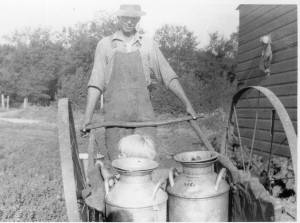
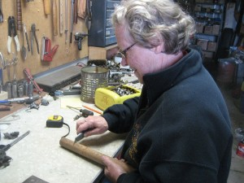

Old Beauty in Yard
Years ago things were seldom discarded, When you no longer used them they were parked out of the way, in case you needed them again. The old milk cart has become a useful thing of interest for my Wife’s flower gardening. I’m sure it has been almost 60 years since it was used on the farm, maybe more. In retirement I have been cleaning up the farm, removing the brush that had overgrown the farm grove.
What I found brought back many Memories. The cart was never used much on the farm in my life time. My father was a bigger and much more modern farmer. I do remember the fun times my sister and I had playing with it, some times with cousins or neighbours. We would take turns riding and pushing. Most of the time as fast as we could run and of course screaming as loud as we could. If the one pushing let go of the handle the cart would nose in, resulting in a nasty spill, unless you had a very secure hold. Another game was balancing the platform by standing carefully in the middle. I even tried to ride it down hill while balancing the platform so the rests in back were off the ground. I never succeeded for more than a very short distance. I did manage a few bruises, though.
I was able to find this old Picture of the Milk Cart in use. That’s my Father and my oldest brother, George Jr. with the blond hair. By Jr.’s age on the picture, it would have been taken about 1926. This snapshot like so many old pictures has no dates or details written on them.
I was hoping for details of construction to help in the restoration. The picture below shows what I started with, this and my imagination.
Somehow it looked worse in my shop than in the woods. I started disassembly by removing the old square headed Iron bolts. I was glad I have an air wrench and square sockets as almost all were so rusted they twisted off. Next I made use of the old Anvil and the hammer I bought used in 1966 at an auction.
You can see why the front of the Anvil is shaped the way it is. A Blacksmith could put whatever curve he needed in the iron.
I had a pail of square head bolts I have been saving for years. I decided to use them to keep with the theme. The next picture shows what I thought was a neat way of holding the wheel on. Why spend money on a cotter key when an old nail will do as well.
The old cart was worse that I figured at first. All bolts and rivets were loose and Irons all needed straightening, cleaning, and paint. I ended up with total dis-assembly and some welding of cracks and brakes. Oh yes, sometime iron breaks when you attempted to straighten. Time does take its toll.
This picture shows the wear on the steal axle. Think how many miles that cart has been pushed. The only mark on the cart was the number on the casting that holds the Axle. Nothing to ID a manufacturer.
Here I’m making the platform out spare pieces of lumber. I had just faded memories and guess work to fabricate it but then who can say I’m wrong.
Below Donna is painting the platform. we painted the frame and wheels before assembly
Note that the paint we are using is an Antique also. it came from an auction many years ago. I think it was old when I bought it. I tried to find out how old it was on the Internet but was unsuccessful.
if you have any Idea of the age write to me.
I had one final adjustment before I was ready for the handle. This made me work a bit. Good thing I had those big pipe wrenches.
On the left I’m pulling out a piece of wood closet rod from my stash of special wood. I think this was left from the new house I built in 1972. Yes I know I am a pack rat, but I do use thinks I have saved all the time.
Here my Wife Donna is preparing the rod for paint. She is cleaning off the burs I made drilling the holes for the bolts that will hold it on the cart. Donna is good at painting and very helpful on projects.
Here the handle goes on, we are getting close to finishing the project.
We only have to grease the axle’s and put wheels and retainers on. As you can see out the door the rain is over and the sun is shining. Its getting time go outside.
Installing the last cotter key to hold the wheel on. Project finished, That’s me pushing it out in the yard with the basket of flowers .
Leave a comment
You must be logged in to post a comment.